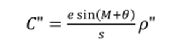
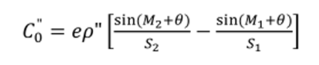
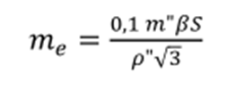
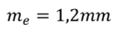

6-амалий иш Мавзу: Инженер-геодезик тармоқларда бурчак ва чизиқ узунлигини ўлчашларнинг ўзига хослиги
Одатда, инженер-геодезик тармоқлар ўзига хос шароитларда барпо этилади. Шу сабабли бундай
ҳолларда бурчак ва масофа ўлчашни услубияти ва ташкил этишга махсус талаблар қўйилади.
Шаҳарлар ва саноат майдонлари ҳудудида барпо этиладиган триангулация тармоқларида
бурчак ўлчашнинг ўзига хослиги қуйидаги
омиллар таъсирида юзага келади:
1) Саноат ва энергетик корхоналар томонидан атроф-муҳитга иссиқлик, тутун ва чангни
ажралиб чиқиши ҳамда темирбетон ва метал
конструкциялар таъсири натижасида ўзига
хос микроклиматнинг мавжудлиги;
2) Баланд бинолар, қувурлар ва минораларнинг қурилиши натижасида визир нурига тўсқинлик
қилувчи кўп сонли тўсиқлар мавжудлиги;
3) Шаҳар шароитида қисқа масофаларда жойлашган геодезик пунктлар баландлигининг кескин
фарқ қилиши;
4) Триангуляция пунктлари жойлашган биноларнинг тебраниши;
Шаҳар иқлими шароити туфайли визир нури йўналишида фазода ва вақтга нисбатан ўзгарувчи
рефракция хосил бўлади. Ёнлама рефракциянинг суткали ва мавсумли ўзгариши бурчак ўлчаш учун
маълум бир вақтни танлашга мажбур этади. Ўлчаш ишлари учун энг қулай фасл эрта боҳор ва
куз хисобланади. Эрталабки ва кечки ўлчаш учун қулай вақт, фасл ва об-ҳаво
холатига боғлиқ холда белгиланади.
Триангуляция томонлари қисқа бўлганлиги сабабли теодолит ва визирлаш мосламасини
марказлаштириш аниқлигига алоҳида эътибор қаратилади.
Маълумки, йўналиш қийматига киритиладиган марказлаштириш тузатмаси C қуйидаги формула
орқали аниқланади:

Бу ерда е,6-редукция элементининг чизиқли ва бурчак қийматлари, Sтриангуляция томонлари
узунлиги, М-ўлчанган йўналиш.
Ўлчанган бурчакка бўлган тузатма Сб эса қуйидагича аниқланади:

Бу ерда 1 ва 2 индекслар биринчи ва иккинчи йўналишларга тегишли.
Юқоридаги ифодаларни дифференциаллаб, ўрта квадратик хатоликка ўтсак, қуйидаги ифодани
ёзиш мумкин:

4-класс триангуляцияси учун mb=2”, энг кичик томон узунлиги S=2км
бўлса:

Шундай қилиб, бурчак ўлчашни амалга оширишда теодолитни марказлаштиришда юқори
аниқликни таъминлаш талаб этилади. Шунга
ўхшаш талаб визир маркасини ўрнатишда ҳам қўйилади.
Қисқа томонлар ва кузатилаётган пунктлар баландликлари фарқи сезиларли ҳолларда теодолит
трубасининг айланиш ўқи қиялигини ҳисобга олиш зарурияти юзага келади. Горизонтал йўналишга
тузатма қуйидагича ҳисобланади.
Бу ерда в-адилак ярим бўлагидаги горизонтал ўқ қиялиги ;
z-йўналишнинг зенит масофаси.
Шаҳарларда светодальномерлар билан масофа ўлчашда ўзига хосликлар мавжуд. Атмосферанинг
чанглиги ва турбулентлиги масофа ўлчаш учун ноқулайликлар туғдиради. Ноқулай омиллар
таъсирини камайтириш учун масофа ўлчашда бир қатор чораларни кўриш керак бўлади.
1. Томонлар узунлигини булутли кунларда, эрта баҳор ёки кузда ўлчаш мақсадга мувофиқ;
2. Триангуляция тармоғининг базис томонини шундай танлаш керакки,пунктлар орасида бир
қаватли бинолар жойлашган бўлсин;
3. Ўлчаш асбобини танлаш сезиларли ахамиятга эга.
Шаҳар шароитида ёруғлик нурини фотоэлектрик регистрация қилувчи светодальномерни қўллаш энг
яхши натижаларни беради.
Бугунги кунда шаҳар шароитида масофа ўлчашларда электрон тахеометрлар кенг кўламда
қўлланилмоқда. Улар тўғрисидаги маълумотлар ушбу дарсликни бешинчи қисмида ёритилган.